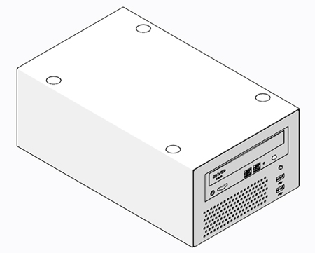
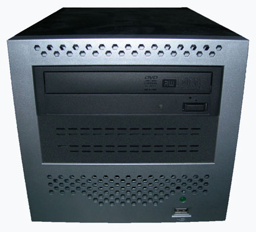
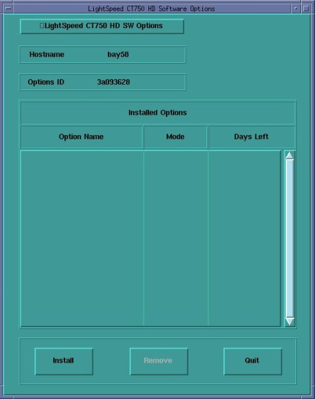
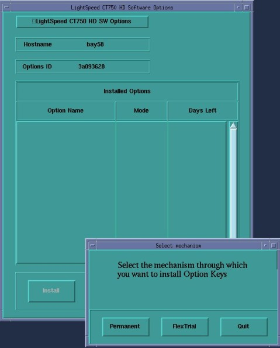
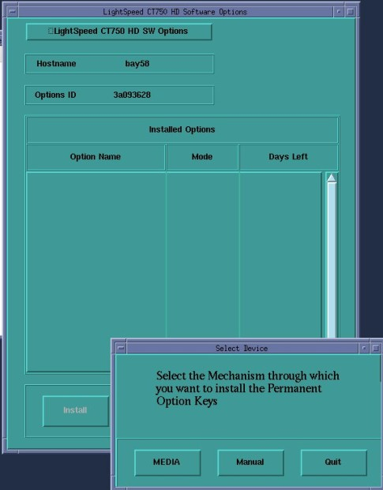
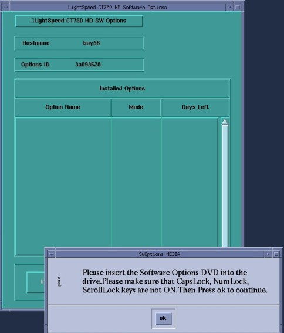
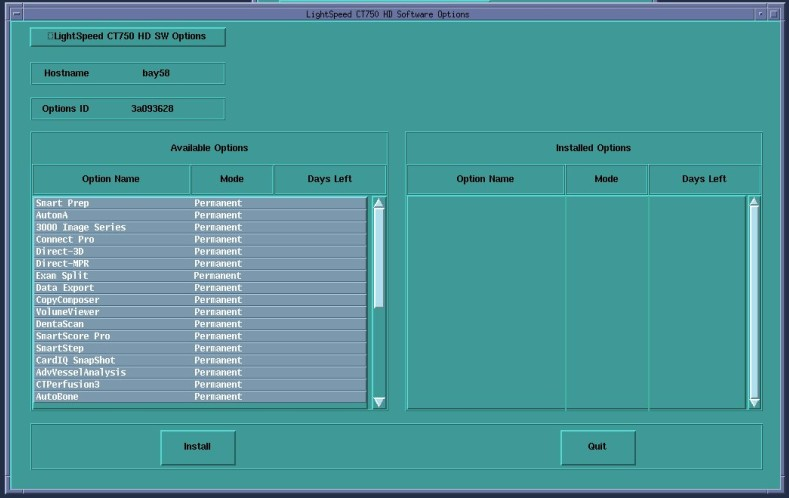
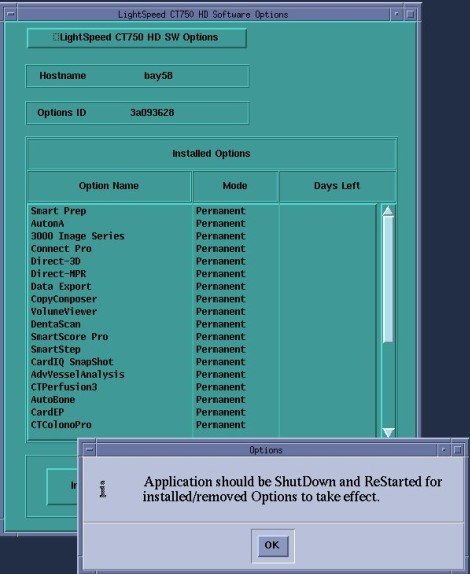
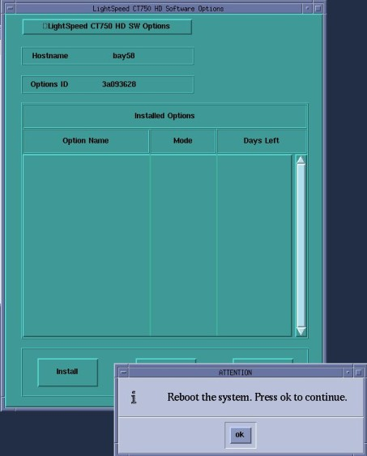

Operating Documentation
Direction 5193574-800, Rev# 22
LightSpeed 7.X Service Methods
Module Version 9.0, Version Date 5/2/13
Operating Documentation |
| Last Revised: | 25 February 2013 |
| NOTE: | If you do not have the Options DVD-RAM, disk you can use the eLicense Tool. Follow this link to the eLicense Page:http://elicense.gehealthcare.com/elicense/. |
| NOTE: | This section of the procedure will need to be repeated for each and every Option DVD-RAM disk, until which point all options have been installed. |
| NOTE: | Software Option licences are also saved and restored via the System State Backup Media. This procedure is only required when installing a Option for the first time or if the System State Backup media is not available. |
| NOTE: | IMPORTANT NOTE: There are three different versions of the Peripheral
Media Tower. This procedure will work for all versions, pictorially
depicting the DVD-Multimedia Drive – Single Bay version (Illustrations
1), DVD-Multimedia Drive – Dual Bay version (Illustrations 2), and
DVD-R and DVD-RAM Drive version (Illustrations 3). The Single or
Dual Bay DVD-Multimedia Drive versions will accommodate all types
of media as long as they are inserted properly. For the
DVD-Multimedia Drive (Single or Dual Bay versions), reference DVD-RAM Cartridge Removal procedure if any of
the Option license disks are contained in the cartridge style media.
The DVD-Multimedia Drive does not accept cartridges. Illustration 1: PMT: Single Bay DVD-Multimedia Drive  Illustration 2: PMT: Dual Bay DVD-Multimedia Drive 
Illustration 3: PMT: Dual Bay DVD-R and DVD-RAM Drives
| ||||||||||||||||
| NOTE: | See Section 2 for License Removal. |
Insert the Options DVD-RAM in the Peripheral Tower DVD-RAM or DVD-Multimedia drive as appropriate.
Click on the [Service] icon to access the Common Service Desktop (CSD).
Click on [Configuration Tab] of CSD and select [Install Options].
A Software Option Install Window will open. Select [Install].
Illustration 4: Install Option Window

The Select Mechanism box appears.
Select [Permanent].
Illustration 5: Select Mechanism Window

The Select Device box appears.
Select [MEDIA].
Illustration 6: Select Device Window

Confirm Options DVD is installed in DVD-RAM or DVD-Multimedia drive as appropriate.
Select [OK].
Illustration 7: Options DVD in Peripheral Drive Confirmation Window

Software options available for installation are displayed on the options screen.
Illustration 8: Select Options Window

Select Options by clicking on the first listed option and dragging the mouse downward to highlight the rest of the visible listed options. If Options list is longer than what is displayed (without moving the vertical slider), perform this step as many times as needed until all Options are loaded. Do not attempt to select all Options in one step. The user interface will not allow the selection of all Options beyond what is visible in the window.
Select [Install].
Select [Quit] exiting the Select Options Window when the process is complete.
Select [Quit] again to exit Install Options window.
A window pops-up displaying: “Application should be shutdown and restarted for installed/removed options to take effect.”
Select [OK].
Illustration 9: Select Options Window - Shutdown/Restart

A window pop-up displaying: “Reboot the System. Press OK to continue.”
Select [OK].
Illustration 10: Select Options Window - Reboot

Reboot the System. Select [Shutdown] on the Desktop and select [Restart], then [OK] on the Attention Window.
Allow the System to come up fully into Application Mode. If the CT Applications fail to start automatically, open a Terminal Window.
Type: {ctuser@hostname}st and press <Enter>.
Check that the Options are now loaded via the Verify Options selection in the [Configuration Tab] screen in CSD.
Click on the [Service] icon to access the Common Service Desktop (CSD).
Click on [Configuration Tab] of CSD and select [Install Options].
A Software Option Install Window will open. Select Option License for removal from the Installed Options list.
Click the Remove Button and confirm by clicking [OK].
A window pops-up displaying: “Application should be shutdown and restarted for installed/removed options to take effect.”
Select [OK].
A window pop-up displaying: “Reboot the System. Press OK to continue.”
Select [OK].
Reboot the System. Select [Shutdown] on the Desktop and select [Restart], then [OK] on the Attention Window.
Allow the System to come up fully into Application Mode. If the CT Applications fail to start automatically, open a Terminal Window.
Type: {ctuser@hostname} st and press <Enter>.
Check that the desired Option is now removed via the Verify Options selection in the [Configuration Tab] screen in CSD.
If loading software on system, return to the Load From Cold procedure.
If installing a new Option, perform a system scanning test that utilizes the new Option.